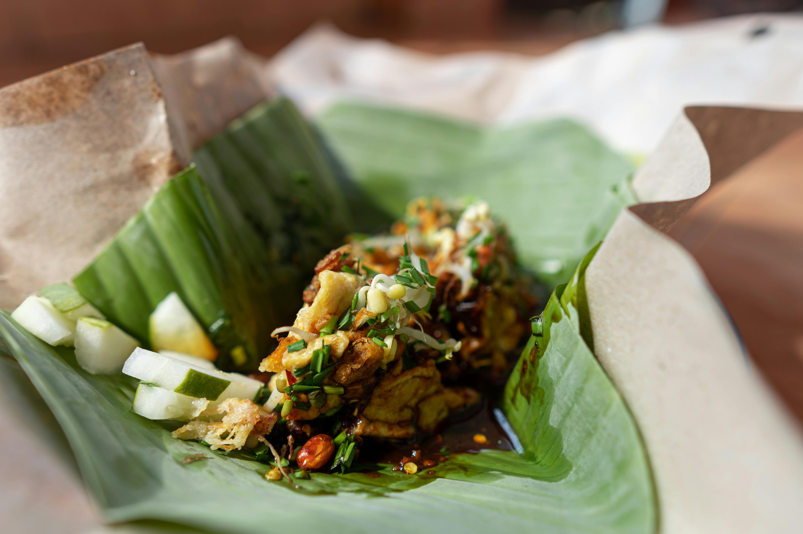

Home
Veggie Fried Rice

Description
Veggie fried rice is a colorful, quick, and nutritious meal loaded with
fresh vegetables and aromatic seasonings. It’s perfect for using up
leftover rice.
It’s a flexible dish—swap in any veggies you like or add tofu or eggs for
protein.
Ingredients
- 2 cups cooked rice (preferably cold)
- 1 cup chopped mixed vegetables (carrots, peas, bell peppers)
- 2 tbsp soy sauce
- 1 tbsp sesame oil or vegetable oil
- 2 garlic cloves, minced
- 1/2 tsp black pepper
- Green onions, chopped
Steps
- Heat oil in a pan and sauté garlic until fragrant.
- Add chopped vegetables and stir-fry until tender-crisp.
- Add the cooked rice and stir well.
- Pour in soy sauce and black pepper, mixing thoroughly.
- Garnish with green onions and serve hot.